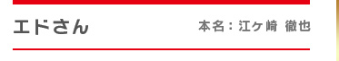
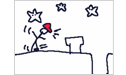
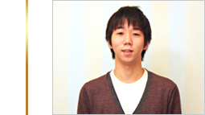
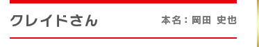
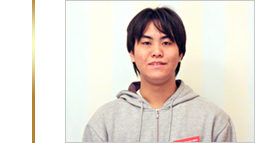
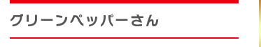
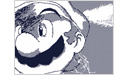
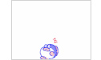

※ 掲載順は、作者名のアイウエオ順とさせていただきます。


6〜7時間程
夢の様な時間はあっという間に過ぎ、今でもドキドキが止まりません。
うごメモは本当に色々な事ができるソフトだと思います。投稿する事だけが全てではありません。この記事をお読みの方々も、まずは書いて楽しんでみて下さい。忘れていた「！」と出会えるはずです。
そして気が向いたらで結構なので、人に見せたり、うごメモシアターで投稿してみて下さい。沢山の「！」と出会えるはずです。あなたがうごメモと出会い、「！」がいっぱいの楽しい生活が送れれば私もうれしいです。
今回のコンテスト投稿作品が初投稿です。うごメモ自体は、閃いた事を書き留めるために使っています。うごメモシアターは主に皆さんの作品を閲覧して楽しんでいます。
自分も、作品として考えているものもあるので、いつか投稿できたらと思います。



2日間で合計6、7時間



数日にわたって少しずつ進め、合計4時間以上

12時間以上